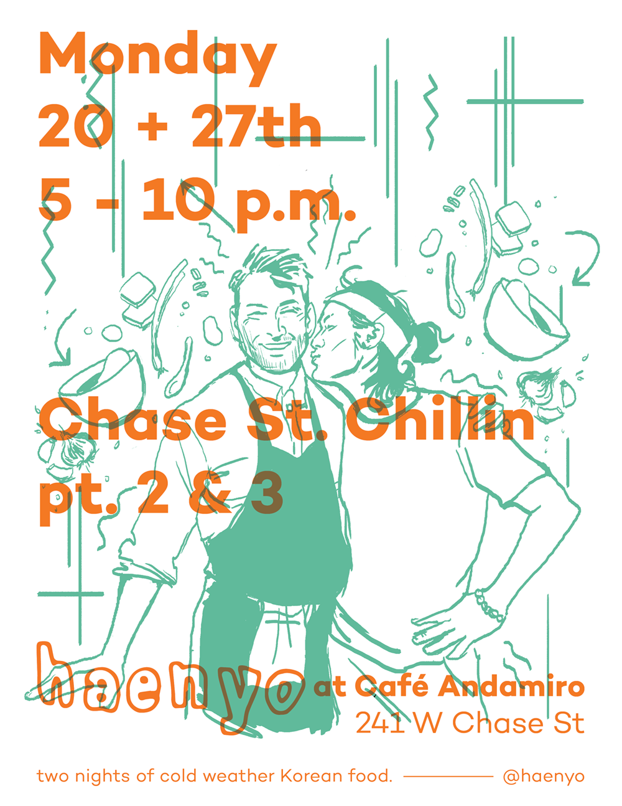
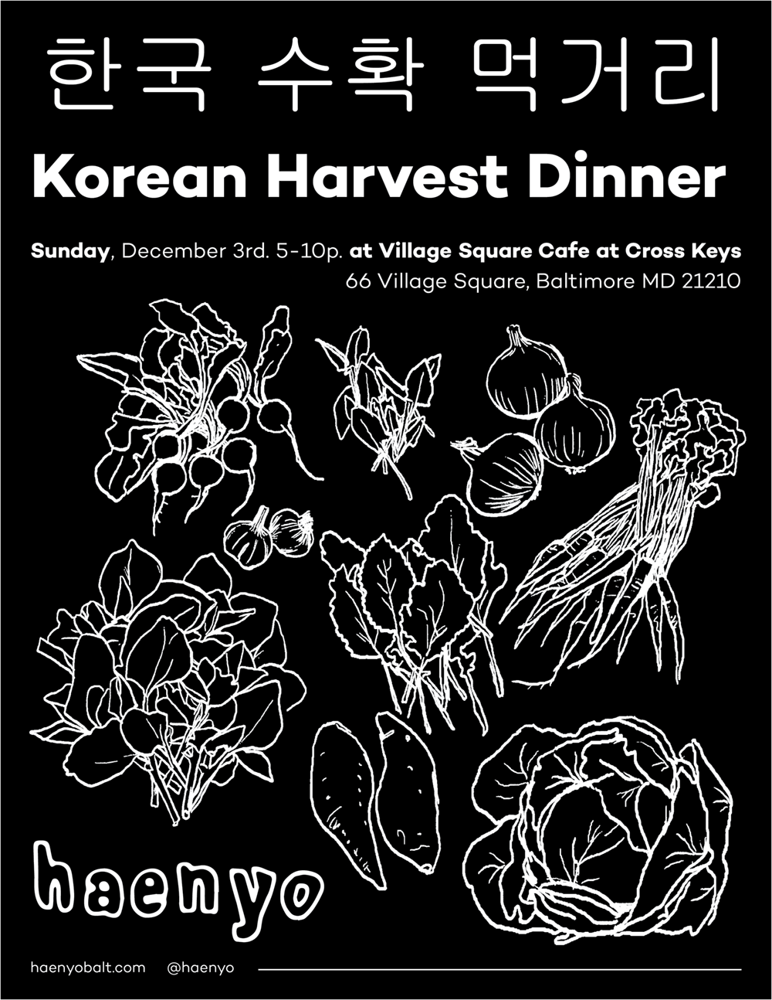
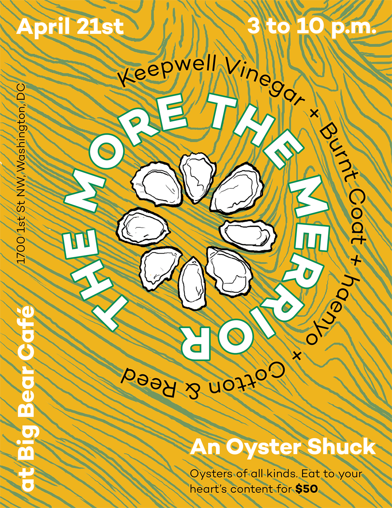
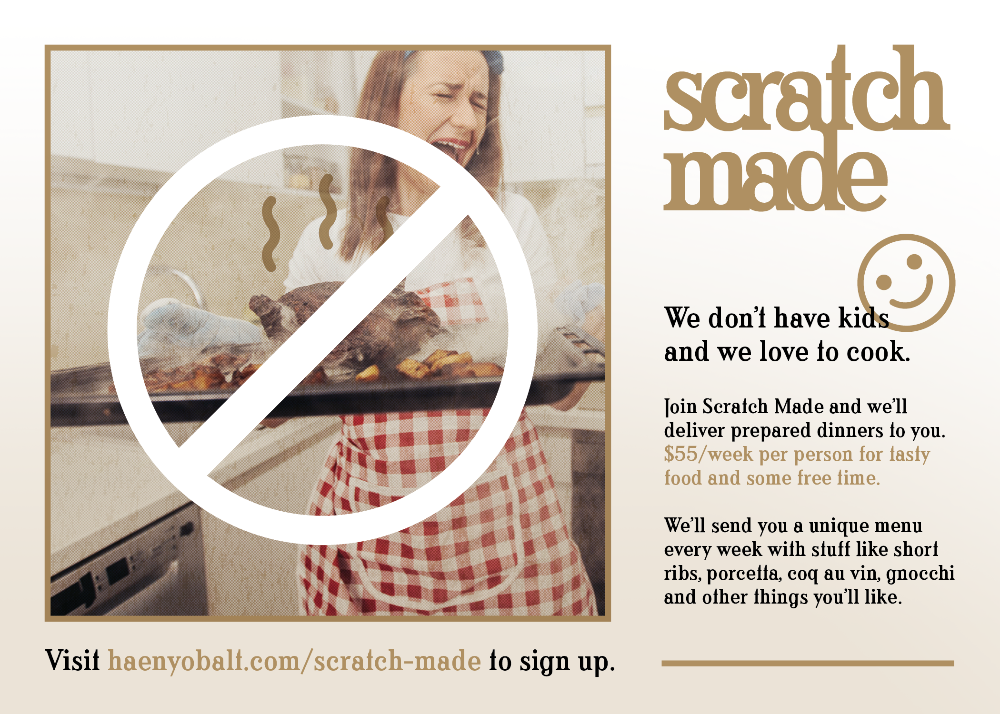
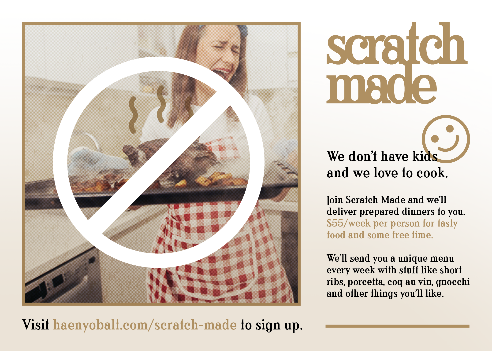

haenyo
haenyo is a colorful Korean pop-up food venture started by Irvin Seo and Collin Morstein. We developed the haenyo identity to be a flexible visual system so that we could incorporate some of the flavor of the restaurants that graciously hosted us while still maintaining a recognizable presence. The pop-up has executed over 50 dinners since its inception in 2017.
 
